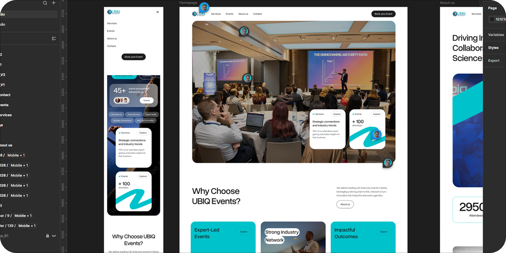
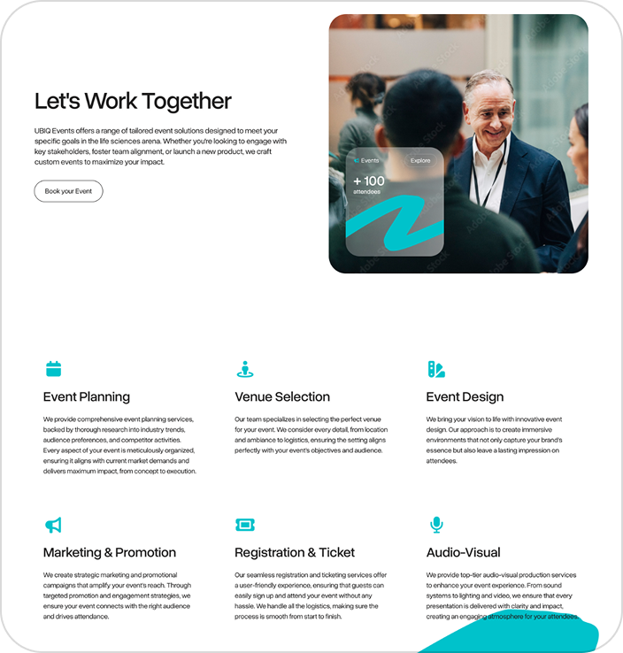
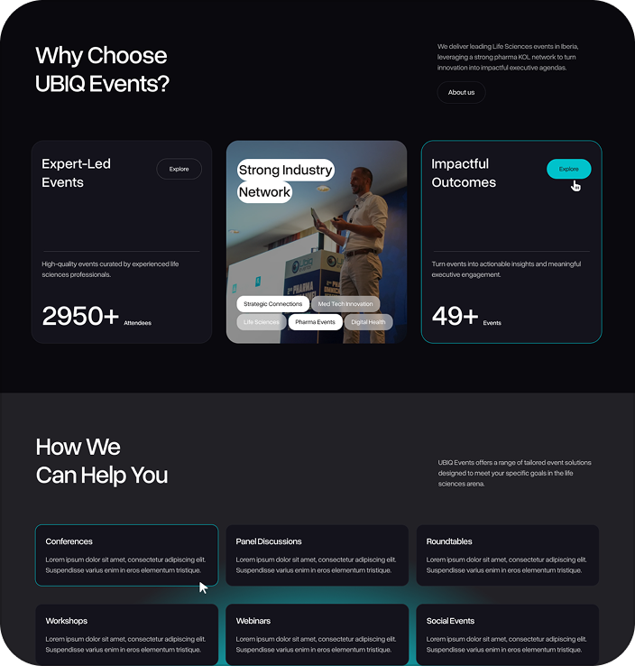

Ubiq Events
View all works →Project Overview
UBIQ Events is a professional event management and organization company that specializes in the Life Sciences sector (Pharmaceuticals, MedTech, and Healthcare). They focus on connecting industry leaders, executives, and key opinion leaders (KOLs) across Europe, particularly within the Iberian region.
I worked closely with the client's team to map the user journey, create wireframes, develop the visual system, and implement the final store, ensuring a consistent experience across desktop and mobile platforms.

Scope of Work
I started by creating wireframes and hopped on regular video calls with the client to brainstorm ideas and consult them on the best UX/UI practices for their website.
Our initial strategy focuses on displaying key performance metrics right in the hero section to establish immediate credibility. Alongside these numbers, we placed a prominent Call to Action (CTA) button directing users straight to their events. The goal of this layout is to capture user intent immediately, by introducing an actionable element right in the hero section, we significantly increase the conversion rate and drive more traffic directly to the event pages.
- UX/UI Consulting & Ideation: Conducted collaborative wireframing sessions via live video consultations to align on user flows, critique design directions, and implement industry best practices.
- Hero Section Optimization:Designed a high-conversion hero section incorporating social proof (key business metrics) to build immediate credibility.
- Conversion Rate Optimization (CRO):Strategic placement of prominent Call-to-Action (CTA) buttons and interactive elements within the first fold to maximize user engagement and seamlessly drive traffic directly to the event pages.


Final Outcome
Process & Collaborative Design
The project kicked off with an iterative wireframing process. Through regular video consultations, I collaborated closely with the client to brainstorm ideas, validate concepts, and provide expert guidance on optimal website UX/UI practices.
Strategic UI Design & CRO
To maximize user engagement right from the start, we strategically structured the hero section to display key performance metrics, establishing immediate brand credibility. To capitalize on this trust, we integrated high-visibility Call-to-Action (CTA) buttons above the fold. By introducing these actionable elements immediately, we successfully captured user intent, significantly increasing the probability of users navigating directly to the event pages.
Learn more about Ubiq Events →